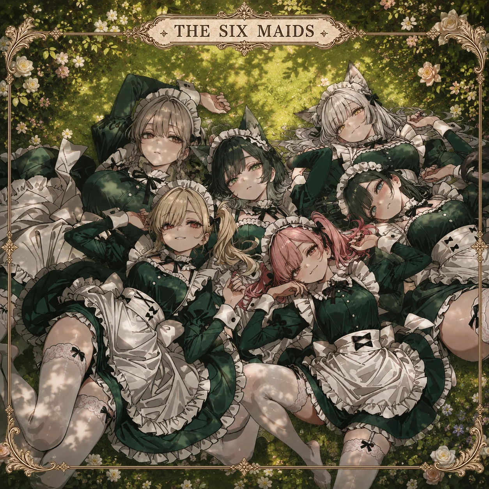

WELCOME TO THE CREATIVE JUNKYARD.CREATED BY GUINNESS / JP
STUDIO GUINNESS

FEATURED FILM THE SIXYouTubeで見る
CHARACTERANIMATIONMUSICSTORYARTWORK
01 / ORIGINAL WORLDTHE SIX MAIDS

SIX MAIDS. SIX COLORS.THE SIX
THE SIX
MAIDS
6人のメイド、6人の色、6人の音色。
6人のメイドを中心とする、オリジナルファンタジー世界。キャラクターの個性と物語を、アニメーション、音楽、アートワークへ。それぞれの表現が、彼女たちの世界を少しずつ広げていきます。
FILMS
ANIMATION / MUSIC / MOTION02 / MUSIC & MOTIONGOCHAMAZE!
MIX THE COLORS. MIX THE SOUNDS.
GOCHAMAZE!
色も、音も、好きなものも。
ぜんぶ混ぜたら、何が生まれる？

ポップな色彩、キャラクターアニメーション、音と映像の同期。
モーショングラフィックスを織り交ぜた、もう一つの表現。
03 / VISUAL EXPLORATIONSSELECTED ARTWORK
ARTWORK
世界を描く。個性をかたちにする。
キービジュアルから、デザインの細部まで。
04 / BEHIND THE WORKSSTUDIO GUINNESS
ABOUT STUDIO GUINNESSひとつの世界を、
ひとつの世界を、
いくつもの表現で。
オリジナルキャラクターと世界観を中心に、映像、音楽、イラスト、物語を横断して制作しています。
AIを制作ツールとして活用しながら、編集、構成、演出、グラフィックデザインを組み合わせ、新しい表現方法を探求しています。
漫画も、これから取り組む新たな表現媒体のひとつです。
GUINNESS Creator / Studio Guinness